Archegon deck v3
ILLUSTRATIVE · NOT AN OFFER 27 slides · October 2026 · corrected after our stress test
Download PowerPointDownload PDF
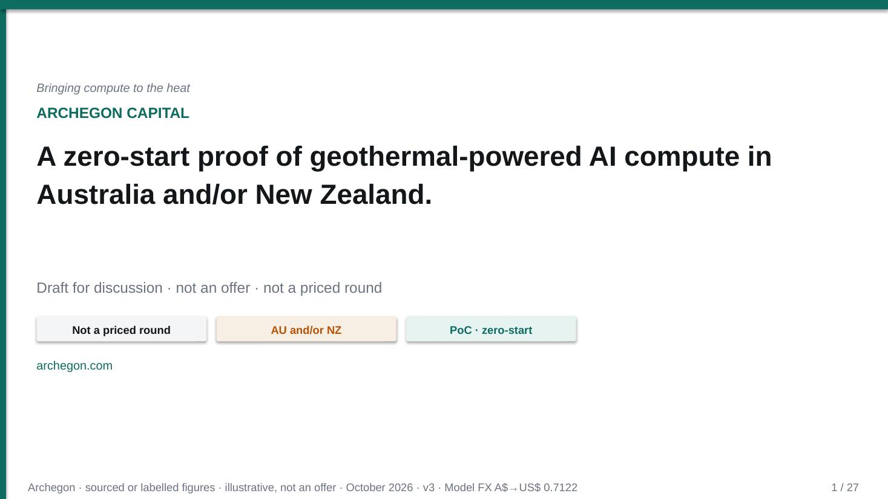
Slide text
- ARCHEGON CAPITAL
- A zero-start proof of geothermal-powered AI compute in Australia and/or New Zealand.
- Draft for discussion · not an offer · not a priced round
- Not a priced round
- AU and/or NZ
- PoC · zero-start
- archegon.com
- 1 / 27
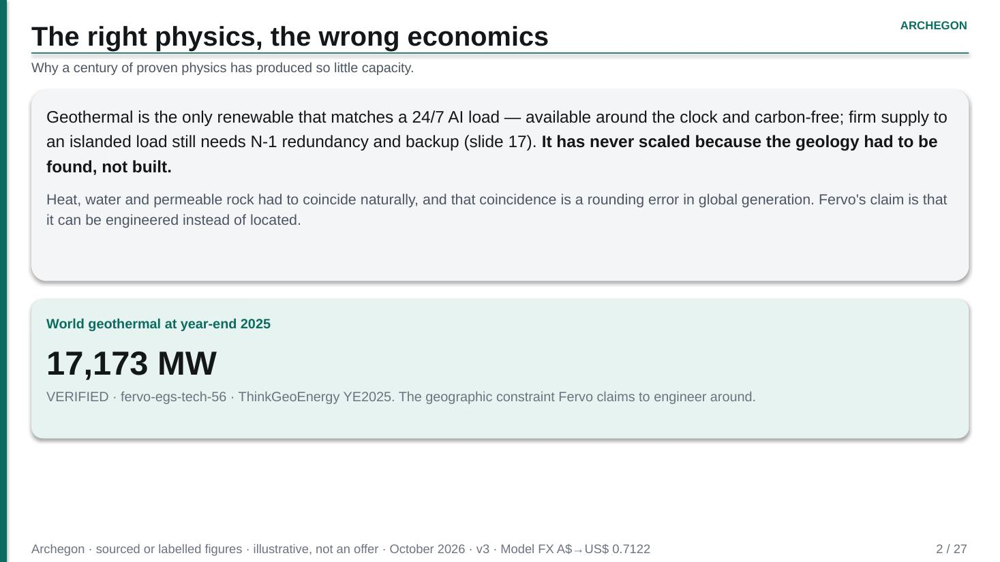
Slide text
- Why a century of proven physics has produced so little capacity.
- Geothermal is the only renewable that matches a 24/7 AI load — available around the clock and carbon-free; firm supply to an islanded load still needs N-1 redundancy and backup (slide 17). It has never scaled because the geology had to be found, not built. Heat, water and permeable rock had to coincide naturally, and that coincidence is a rounding error in global generation. Fervo's claim is that it can be engineered instead of located.
- World geothermal at year-end 2025
- 17,173 MW
- VERIFIED · fervo-egs-tech-56 · ThinkGeoEnergy YE2025. The geographic constraint Fervo claims to engineer around.
- 2 / 27
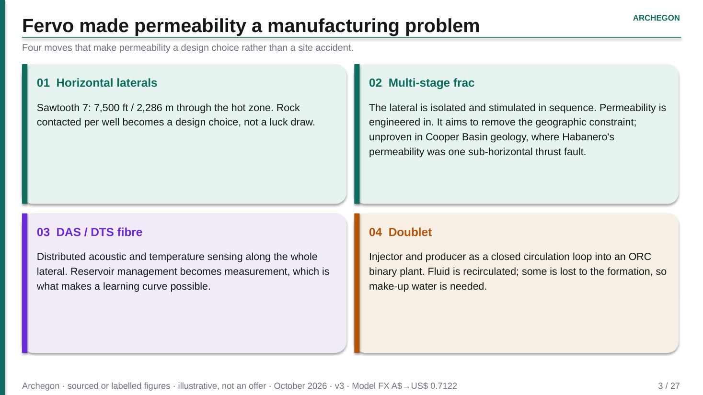
Slide text
- Four moves that make permeability a design choice rather than a site accident.
- 01 Horizontal laterals
- Sawtooth 7: 7,500 ft / 2,286 m through the hot zone. Rock contacted per well becomes a design choice, not a luck draw.
- 02 Multi-stage frac
- The lateral is isolated and stimulated in sequence. Permeability is engineered in. It aims to remove the geographic constraint; unproven in Cooper Basin geology, where Habanero's permeability was one sub-horizontal thrust fault.
- 03 DAS / DTS fibre
- Distributed acoustic and temperature sensing along the whole lateral. Reservoir management becomes measurement, which is what makes a learning curve possible.
- 04 Doublet
- Injector and producer as a closed circulation loop into an ORC binary plant. Fluid is recirculated; some is lost to the formation, so make-up water is needed.
- 3 / 27
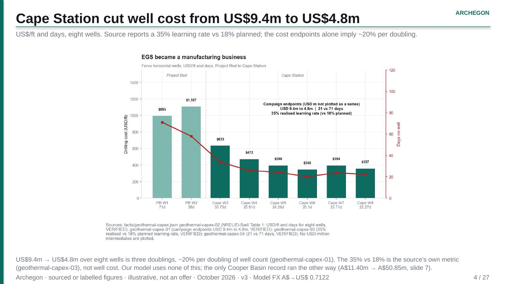
Slide text
- US$/ft and days, eight wells. Source reports a 35% learning rate vs 18% planned; the cost endpoints alone imply ~20% per doubling.
- US$9.4m → US$4.8m over eight wells is three doublings, ~20% per doubling of well count (geothermal-capex-01). The 35% vs 18% is the source's own metric (geothermal-capex-03), not well cost. Our model uses none of this; the only Cooper Basin record ran the other way (A$11.40m → A$50.85m, slide 7).
- 4 / 27
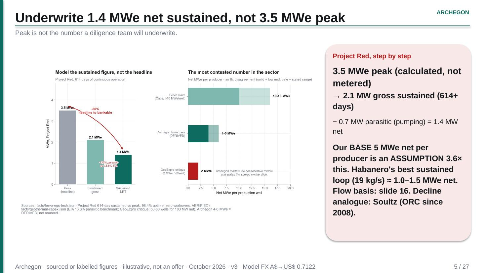
Slide text
- Peak is not the number a diligence team will underwrite.
- Project Red, step by step 3.5 MWe peak (calculated, not metered) → 2.1 MW gross sustained (614+ days) − 0.7 MW parasitic (pumping) = 1.4 MW net Our BASE 5 MWe net per producer is an ASSUMPTION 3.6× this. Habanero's best sustained loop (19 kg/s) ≈ 1.0–1.5 MWe net. Flow basis: slide 16. Decline analogue: Soultz (ORC since 2008).
- 5 / 27
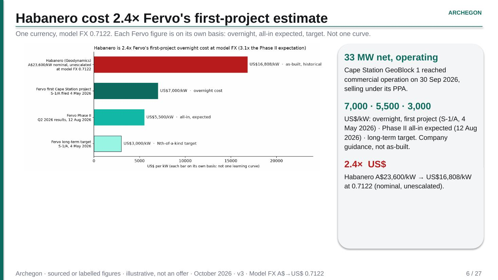
Slide text
- One currency, model FX 0.7122. Each Fervo figure is on its own basis: overnight, all-in expected, target. Not one curve.
- 33 MW net, operating Cape Station GeoBlock 1 reached commercial operation on 30 Sep 2026, selling under its PPA. 7,000 · 5,500 · 3,000 US$/kW: overnight, first project (S-1/A, 4 May 2026) · Phase II all-in expected (12 Aug 2026) · long-term target. Company guidance, not as-built. 2.4× US$ Habanero A$23,600/kW → US$16,808/kW at 0.7122 (nominal, unescalated).
- 6 / 27
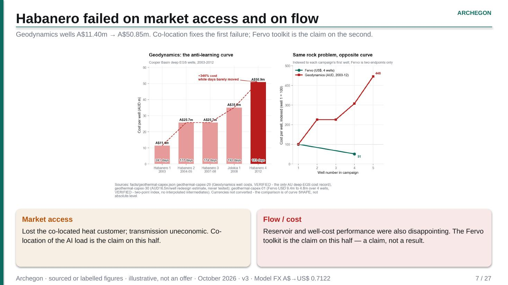
Slide text
- Geodynamics wells A$11.40m → A$50.85m. Co-location fixes the first failure; Fervo toolkit is the claim on the second.
- Market access Lost the co-located heat customer; transmission uneconomic. Co-location of the AI load is the claim on this half.
- Flow / cost Reservoir and well-cost performance were also disappointing. The Fervo toolkit is the claim on this half — a claim, not a result.
- 7 / 27
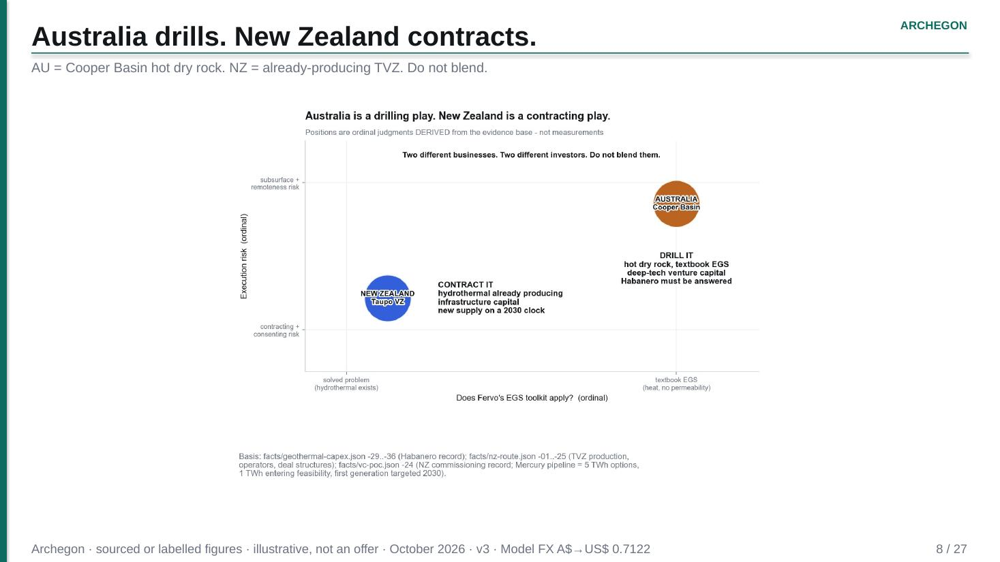
Slide text
- AU = Cooper Basin hot dry rock. NZ = already-producing TVZ. Do not blend.
- 8 / 27
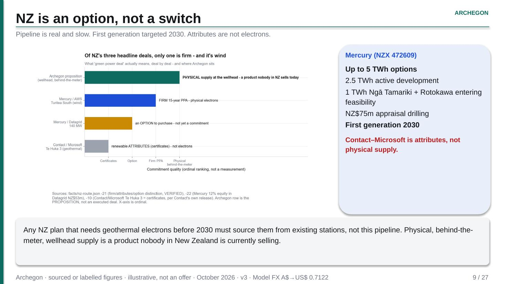
Slide text
- Pipeline is real and slow. First generation targeted 2030. Attributes are not electrons.
- Mercury (NZX 472609) Up to 5 TWh options 2.5 TWh active development 1 TWh Ngā Tamariki + Rotokawa entering feasibility NZ$75m appraisal drilling First generation 2030 Contact–Microsoft is attributes, not physical supply.
- Any NZ plan that needs geothermal electrons before 2030 must source them from existing stations, not this pipeline. Physical, behind-the-meter, wellhead supply is a product nobody in New Zealand is currently selling.
- 9 / 27
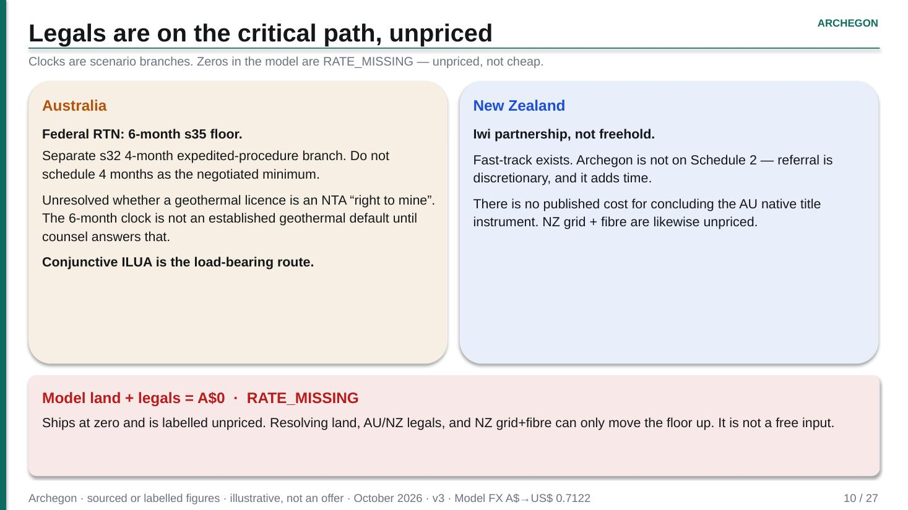
Slide text
- Clocks are scenario branches. Zeros in the model are RATE_MISSING — unpriced, not cheap.
- Australia Federal RTN: 6-month s35 floor. Separate s32 4-month expedited-procedure branch. Do not schedule 4 months as the negotiated minimum. Unresolved whether a geothermal licence is an NTA “right to mine”. The 6-month clock is not an established geothermal default until counsel answers that. Conjunctive ILUA is the load-bearing route.
- New Zealand Iwi partnership, not freehold. Fast-track exists. Archegon is not on Schedule 2 — referral is discretionary, and it adds time. There is no published cost for concluding the AU native title instrument. NZ grid + fibre are likewise unpriced.
- Model land + legals = A$0 · RATE_MISSING Ships at zero and is labelled unpriced. Resolving land, AU/NZ legals, and NZ grid+fibre can only move the floor up. It is not a free input.
- 10 / 27
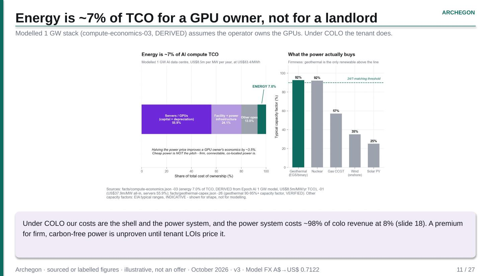
Slide text
- Modelled 1 GW stack (compute-economics-03, DERIVED) assumes the operator owns the GPUs. Under COLO the tenant does.
- Under COLO our costs are the shell and the power system, and the power system costs ~98% of colo revenue at 8% (slide 18). A premium for firm, carbon-free power is unproven until tenant LOIs price it.
- 11 / 27
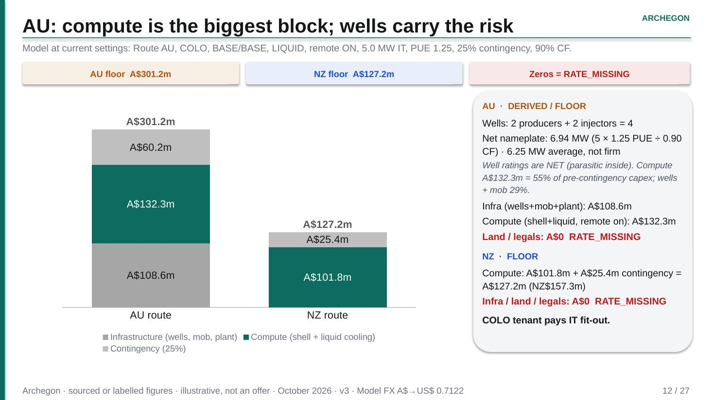
Slide text
- Model at current settings: Route AU, COLO, BASE/BASE, LIQUID, remote ON, 5.0 MW IT, PUE 1.25, 25% contingency, 90% CF.
- AU floor A$301.2m
- NZ floor A$127.2m
- Zeros = RATE_MISSING
- AU · DERIVED / FLOOR Wells: 2 producers + 2 injectors = 4 Net nameplate: 6.94 MW (5 × 1.25 PUE ÷ 0.90 CF) · 6.25 MW average, not firm Well ratings are NET (parasitic inside). Compute A$132.3m = 55% of pre-contingency capex; wells + mob 29%. Infra (wells+mob+plant): A$108.6m Compute (shell+liquid, remote on): A$132.3m Land / legals: A$0 RATE_MISSING NZ · FLOOR Compute: A$101.8m + A$25.4m contingency = A$127.2m (NZ$157.3m) Infra / land / legals: A$0 RATE_MISSING COLO tenant pays IT fit-out.
- 12 / 27
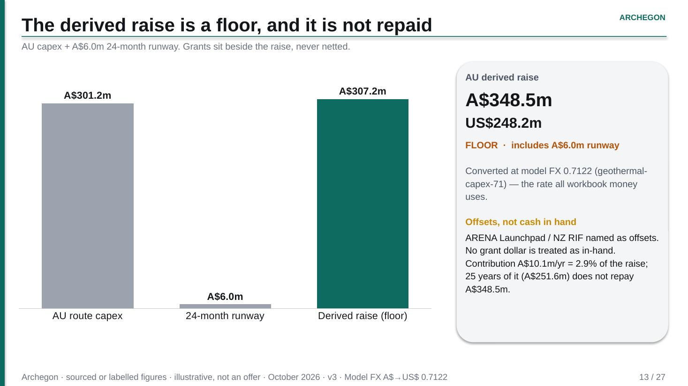
Slide text
- AU capex + A$6.0m 24-month runway. Grants sit beside the raise, never netted.
- AU derived raise A$348.5m US$248.2m FLOOR · includes A$6.0m runway Converted at model FX 0.7122 (geothermal-capex-71) — the rate all workbook money uses. Offsets, not cash in hand ARENA Launchpad / NZ RIF named as offsets. No grant dollar is treated as in-hand. Contribution A$10.1m/yr = 2.9% of the raise; 25 years of it (A$251.6m) does not repay A$348.5m.
- 13 / 27
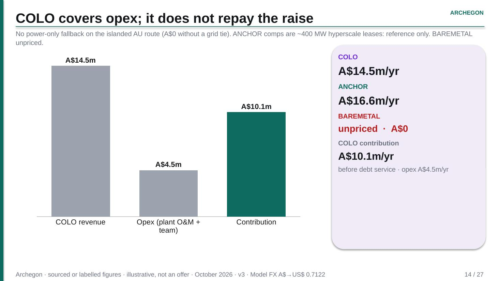
Slide text
- No power-only fallback on the islanded AU route (A$0 without a grid tie). ANCHOR comps are ~400 MW hyperscale leases: reference only. BAREMETAL unpriced.
- COLO A$14.5m/yr ANCHOR A$16.6m/yr BAREMETAL unpriced · A$0 COLO contribution A$10.1m/yr before debt service · opex A$4.5m/yr
- 14 / 27
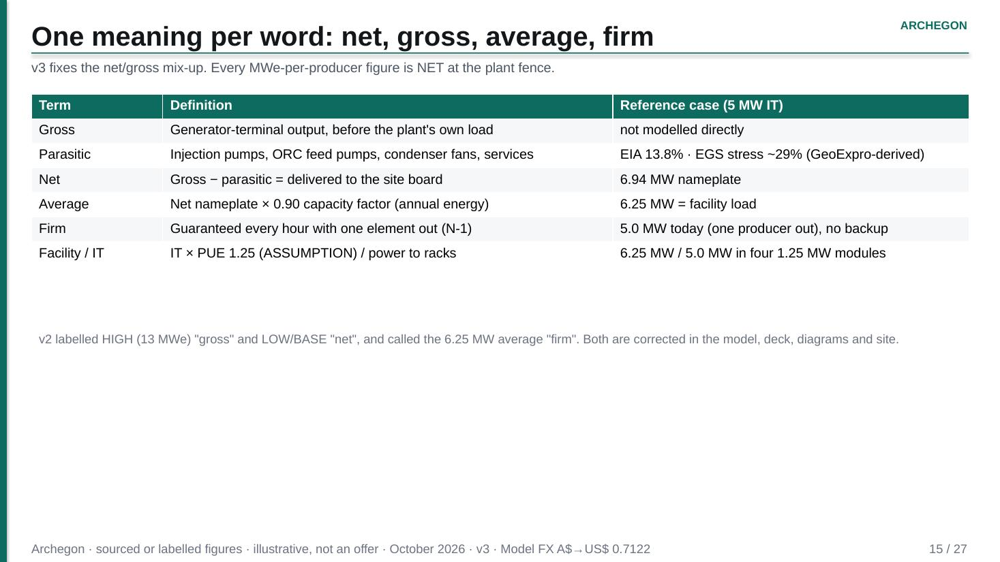
Slide text
- v3 fixes the net/gross mix-up. Every MWe-per-producer figure is NET at the plant fence.
- 15 / 27
- Term | Definition | Reference case (5 MW IT)
- Gross | Generator-terminal output, before the plant's own load | not modelled directly
- Parasitic | Injection pumps, ORC feed pumps, condenser fans, services | EIA 13.8% · EGS stress ~29% (GeoExpro-derived)
- Net | Gross − parasitic = delivered to the site board | 6.94 MW nameplate
- Average | Net nameplate × 0.90 capacity factor (annual energy) | 6.25 MW = facility load
- Firm | Guaranteed every hour with one element out (N-1) | 5.0 MW today (one producer out), no backup
- Facility / IT | IT × PUE 1.25 (ASSUMPTION) / power to racks | 6.25 MW / 5.0 MW in four 1.25 MW modules
- v2 labelled HIGH (13 MWe) "gross" and LOW/BASE "net", and called the 6.25 MW average "firm". Both are corrected in the model, deck, diagrams and site.
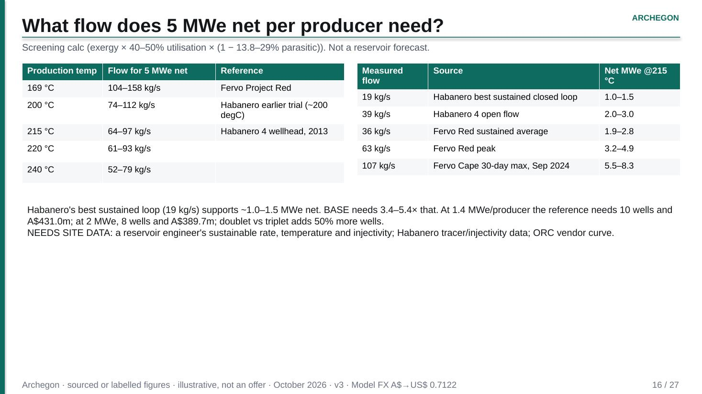
Slide text
- Screening calc (exergy × 40–50% utilisation × (1 − 13.8–29% parasitic)). Not a reservoir forecast.
- 16 / 27
- Production temp | Flow for 5 MWe net | Reference
- 169 °C | 104–158 kg/s | Fervo Project Red
- 200 °C | 74–112 kg/s | Habanero earlier trial (~200 degC)
- 215 °C | 64–97 kg/s | Habanero 4 wellhead, 2013
- 220 °C | 61–93 kg/s |
- 240 °C | 52–79 kg/s |
- Measured flow | Source | Net MWe @215 °C
- 19 kg/s | Habanero best sustained closed loop | 1.0–1.5
- 39 kg/s | Habanero 4 open flow | 2.0–3.0
- 36 kg/s | Fervo Red sustained average | 1.9–2.8
- 63 kg/s | Fervo Red peak | 3.2–4.9
- 107 kg/s | Fervo Cape 30-day max, Sep 2024 | 5.5–8.3
- Habanero's best sustained loop (19 kg/s) supports ~1.0–1.5 MWe net. BASE needs 3.4–5.4× that. At 1.4 MWe/producer the reference needs 10 wells and A$431.0m; at 2 MWe, 8 wells and A$389.7m; doublet vs triplet adds 50% more wells. NEEDS SITE DATA: a reservoir engineer's sustainable rate, temperature and injectivity; Habanero tracer/injectivity data; ORC vendor curve.
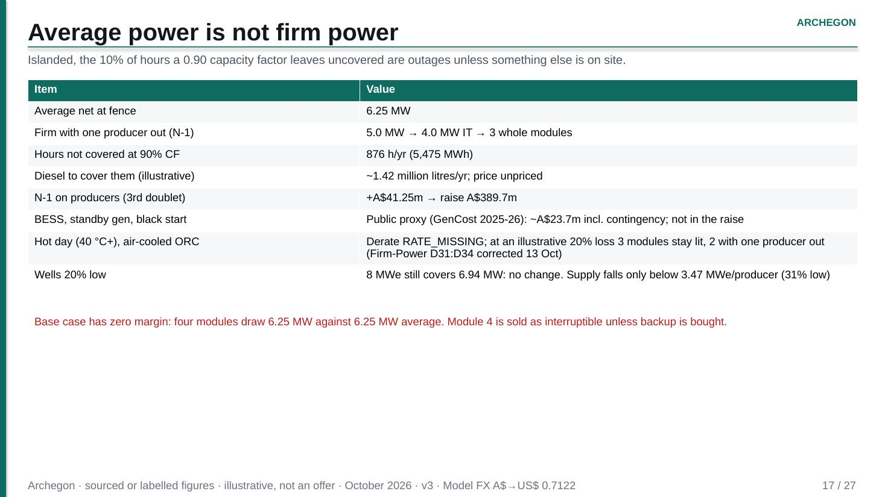
Slide text
- Islanded, the 10% of hours a 0.90 capacity factor leaves uncovered are outages unless something else is on site.
- 17 / 27
- Item | Value
- Average net at fence | 6.25 MW
- Firm with one producer out (N-1) | 5.0 MW → 4.0 MW IT → 3 whole modules
- Hours not covered at 90% CF | 876 h/yr (5,475 MWh)
- Diesel to cover them (illustrative) | ~1.42 million litres/yr; price unpriced
- N-1 on producers (3rd doublet) | +A$41.25m → raise A$389.7m
- BESS, standby gen, black start | Public proxy (GenCost 2025-26): ~A$23.7m incl. contingency; not in the raise
- Hot day (40 °C+), air-cooled ORC | Derate RATE_MISSING; at an illustrative 20% loss 3 modules stay lit, 2 with one producer out (Firm-Power D31:D34 corrected 13 Oct)
- Wells 20% low | 8 MWe still covers 6.94 MW: no change. Supply falls only below 3.47 MWe/producer (31% low)
- Base case has zero margin: four modules draw 6.25 MW against 6.25 MW average. Module 4 is sold as interruptible unless backup is bought.
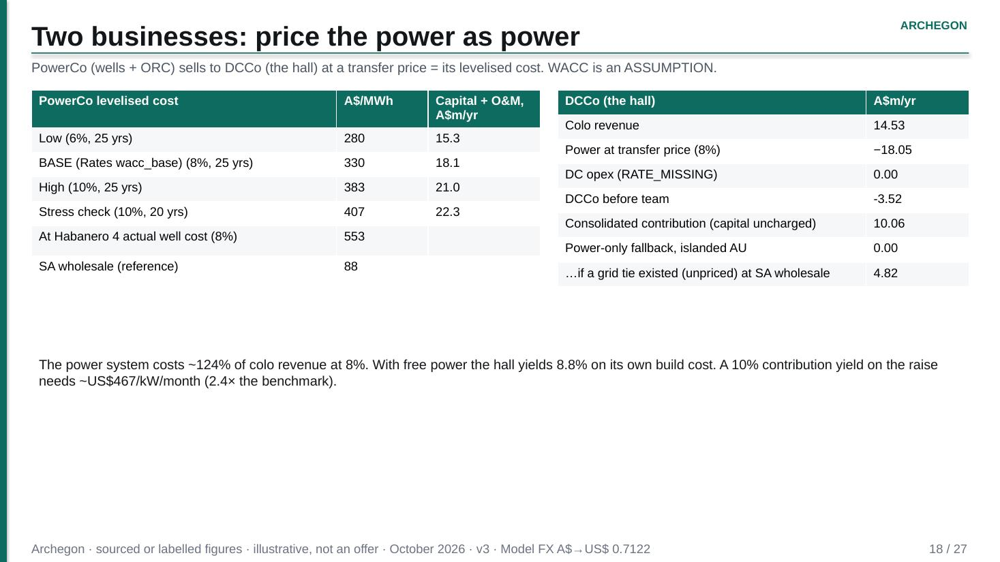
Slide text
- PowerCo (wells + ORC) sells to DCCo (the hall) at a transfer price = its levelised cost. WACC is an ASSUMPTION.
- 18 / 27
- PowerCo levelised cost | A$/MWh | Capital + O&M, A$m/yr
- Low (6%, 25 yrs) | 280 | 15.3
- BASE (Rates wacc_base) (8%, 25 yrs) | 330 | 18.1
- High (10%, 25 yrs) | 383 | 21.0
- Stress check (10%, 20 yrs) | 407 | 22.3
- At Habanero 4 actual well cost (8%) | 553 |
- SA wholesale (reference) | 88 |
- DCCo (the hall) | A$m/yr
- Colo revenue | 14.53
- Power at transfer price (8%) | −18.05
- DC opex (RATE_MISSING) | 0.00
- DCCo before team | -3.52
- Consolidated contribution (capital uncharged) | 10.06
- Power-only fallback, islanded AU | 0.00
- …if a grid tie existed (unpriced) at SA wholesale | 4.82
- The power system costs ~124% of colo revenue at 8%. With free power the hall yields 8.8% on its own build cost. A 10% contribution yield on the raise needs ~US$467/kW/month (2.4× the benchmark).
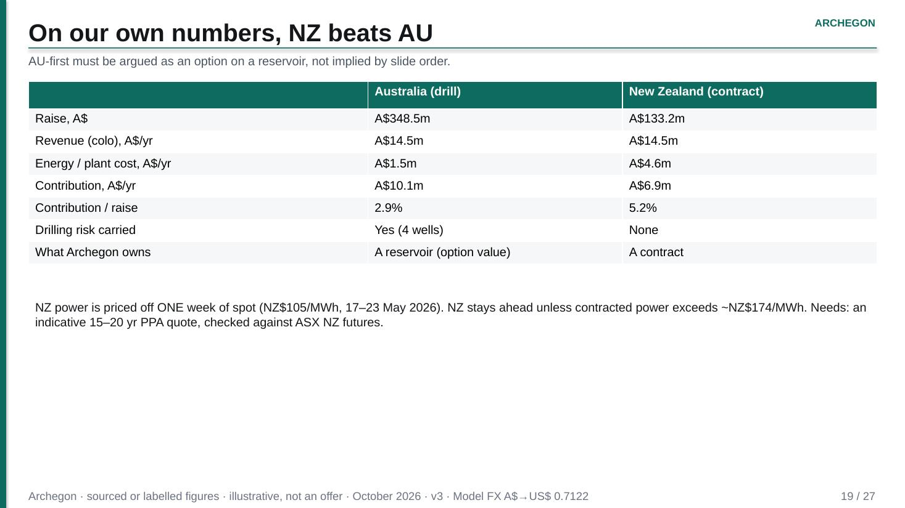
Slide text
- AU-first must be argued as an option on a reservoir, not implied by slide order.
- 19 / 27
- | Australia (drill) | New Zealand (contract)
- Raise, A$ | A$348.5m | A$133.2m
- Revenue (colo), A$/yr | A$14.5m | A$14.5m
- Energy / plant cost, A$/yr | A$1.5m | A$4.6m
- Contribution, A$/yr | A$10.1m | A$6.9m
- Contribution / raise | 2.9% | 5.2%
- Drilling risk carried | Yes (4 wells) | None
- What Archegon owns | A reservoir (option value) | A contract
- NZ power is priced off ONE week of spot (NZ$105/MWh, 17–23 May 2026). NZ stays ahead unless contracted power exceeds ~NZ$174/MWh. Needs: an indicative 15–20 yr PPA quote, checked against ASX NZ futures.
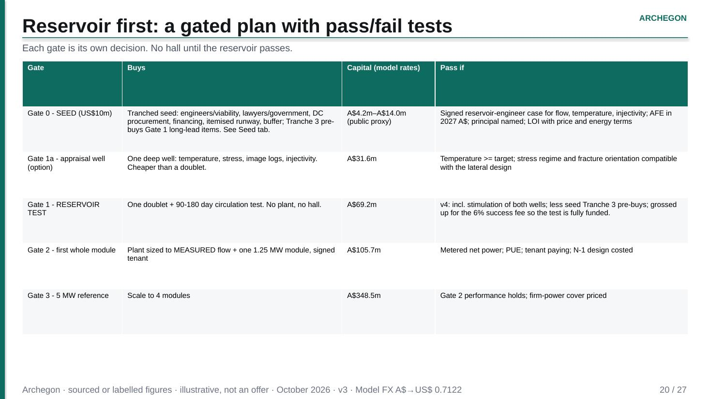
Slide text
- Each gate is its own decision. No hall until the reservoir passes.
- 20 / 27
- Gate | Buys | Capital (model rates) | Pass if
- Gate 0 - SEED (US$10m) | Tranched seed: engineers/viability, lawyers/government, DC procurement, financing, itemised runway, buffer; Tranche 3 pre-buys Gate 1 long-lead items. See Seed tab. | A$4.2m–A$14.0m (public proxy) | Signed reservoir-engineer case for flow, temperature, injectivity; AFE in 2027 A$; principal named; LOI with price and energy terms
- Gate 1a - appraisal well (option) | One deep well: temperature, stress, image logs, injectivity. Cheaper than a doublet. | A$31.6m | Temperature >= target; stress regime and fracture orientation compatible with the lateral design
- Gate 1 - RESERVOIR TEST | One doublet + 90-180 day circulation test. No plant, no hall. | A$69.2m | v4: incl. stimulation of both wells; less seed Tranche 3 pre-buys; grossed up for the 6% success fee so the test is fully funded.
- Gate 2 - first whole module | Plant sized to MEASURED flow + one 1.25 MW module, signed tenant | A$105.7m | Metered net power; PUE; tenant paying; N-1 design costed
- Gate 3 - 5 MW reference | Scale to 4 modules | A$348.5m | Gate 2 performance holds; firm-power cover priced
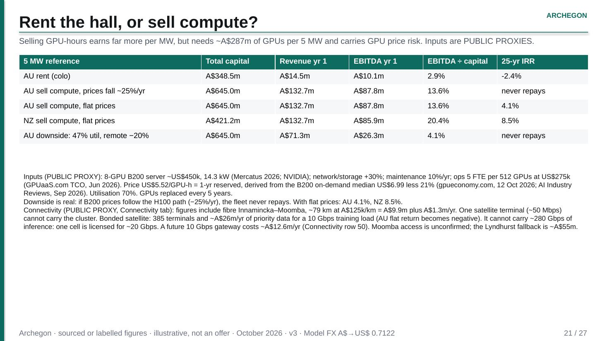
Slide text
- Selling GPU-hours earns far more per MW, but needs ~A$287m of GPUs per 5 MW and carries GPU price risk. Inputs are PUBLIC PROXIES.
- 21 / 27
- 5 MW reference | Total capital | Revenue yr 1 | EBITDA yr 1 | EBITDA ÷ capital | 25-yr IRR
- AU rent (colo) | A$348.5m | A$14.5m | A$10.1m | 2.9% | -2.4%
- AU sell compute, prices fall ~25%/yr | A$645.0m | A$132.7m | A$87.8m | 13.6% | never repays
- AU sell compute, flat prices | A$645.0m | A$132.7m | A$87.8m | 13.6% | 4.1%
- NZ sell compute, flat prices | A$421.2m | A$132.7m | A$85.9m | 20.4% | 8.5%
- AU downside: 47% util, remote −20% | A$645.0m | A$71.3m | A$26.3m | 4.1% | never repays
- Inputs (PUBLIC PROXY): 8-GPU B200 server ~US$450k, 14.3 kW (Mercatus 2026; NVIDIA); network/storage +30%; maintenance 10%/yr; ops 5 FTE per 512 GPUs at US$275k (GPUaaS.com TCO, Jun 2026). Price US$5.52/GPU-h = 1-yr reserved, derived from the B200 on-demand median US$6.99 less 21% (gpueconomy.com, 12 Oct 2026; AI Industry Reviews, Sep 2026). Utilisation 70%. GPUs replaced every 5 years. Downside is real: if B200 prices follow the H100 path (−25%/yr), the fleet never repays. With flat prices: AU 4.1%, NZ 8.5%. Connectivity (PUBLIC PROXY, Connectivity tab): figures include fibre Innamincka–Moomba, ~79 km at A$125k/km = A$9.9m plus A$1.3m/yr. One satellite terminal (~50 Mbps) cannot carry the cluster. Bonded satellite: 385 terminals and ~A$26m/yr of priority data for a 10 Gbps training load (AU flat return becomes negative). It cannot carry ~280 Gbps of inference: one cell is licensed for ~20 Gbps. A future 10 Gbps gateway costs ~A$12.6m/yr (Connectivity row 50). Moomba access is unconfirmed; the Lyndhurst fallback is ~A$55m.
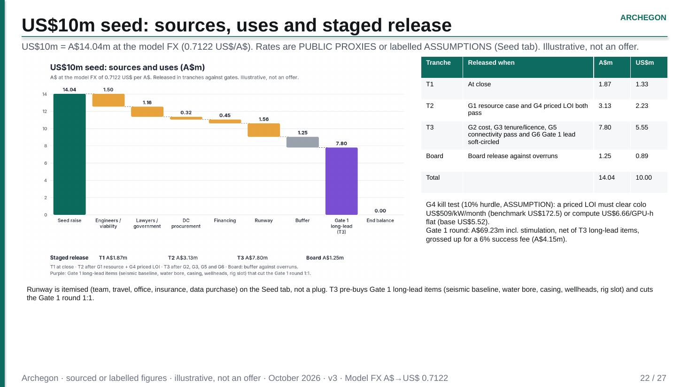
Slide text
- US$10m = A$14.04m at the model FX (0.7122 US$/A$). Rates are PUBLIC PROXIES or labelled ASSUMPTIONS (Seed tab). Illustrative, not an offer.
- 22 / 27
- Tranche | Released when | A$m | US$m
- T1 | At close | 1.87 | 1.33
- T2 | G1 resource case and G4 priced LOI both pass | 3.13 | 2.23
- T3 | G2 cost, G3 tenure/licence, G5 connectivity pass and G6 Gate 1 lead soft-circled | 7.80 | 5.55
- Board | Board release against overruns | 1.25 | 0.89
- Total | | 14.04 | 10.00
- G4 kill test (10% hurdle, ASSUMPTION): a priced LOI must clear colo US$509/kW/month (benchmark US$172.5) or compute US$6.66/GPU-h flat (base US$5.52). Gate 1 round: A$69.23m incl. stimulation, net of T3 long-lead items, grossed up for a 6% success fee (A$4.15m).
- Runway is itemised (team, travel, office, insurance, data purchase) on the Seed tab, not a plug. T3 pre-buys Gate 1 long-lead items (seismic baseline, water bore, casing, wellheads, rig slot) and cuts the Gate 1 round 1:1.
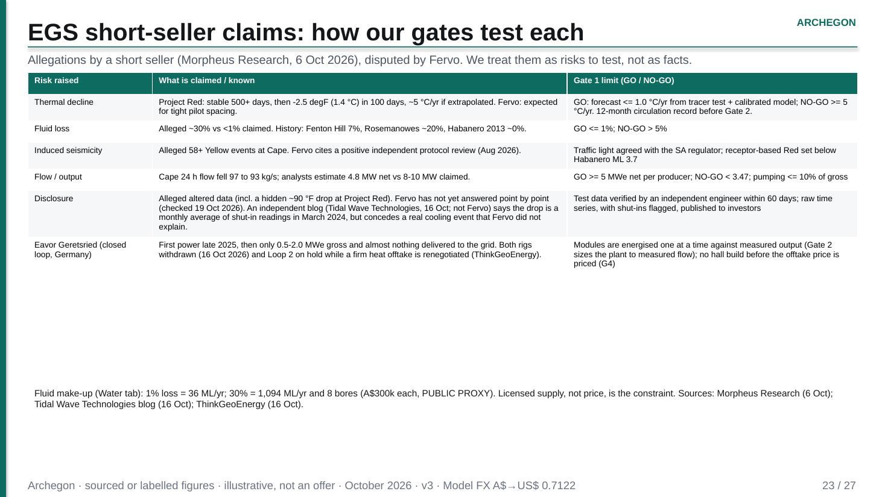
Slide text
- Allegations by a short seller (Morpheus Research, 6 Oct 2026), disputed by Fervo. We treat them as risks to test, not as facts.
- 23 / 27
- Risk raised | What is claimed / known | Gate 1 limit (GO / NO-GO)
- Thermal decline | Project Red: stable 500+ days, then -2.5 degF (1.4 °C) in 100 days, ~5 °C/yr if extrapolated. Fervo: expected for tight pilot spacing. | GO: forecast <= 1.0 °C/yr from tracer test + calibrated model; NO-GO >= 5 °C/yr. 12-month circulation record before Gate 2.
- Fluid loss | Alleged ~30% vs <1% claimed. History: Fenton Hill 7%, Rosemanowes ~20%, Habanero 2013 ~0%. | GO <= 1%; NO-GO > 5%
- Induced seismicity | Alleged 58+ Yellow events at Cape. Fervo cites a positive independent protocol review (Aug 2026). | Traffic light agreed with the SA regulator; receptor-based Red set below Habanero ML 3.7
- Flow / output | Cape 24 h flow fell 97 to 93 kg/s; analysts estimate 4.8 MW net vs 8-10 MW claimed. | GO >= 5 MWe net per producer; NO-GO < 3.47; pumping <= 10% of gross
- Disclosure | Alleged altered data (incl. a hidden ~90 °F drop at Project Red). Fervo has not yet answered point by point (checked 19 Oct 2026). An independent blog (Tidal Wave Technologies, 16 Oct; not Fervo) says the drop is a monthly average of shut-in readings in March 2024, but concedes a real cooling event that Fervo did not explain. | Test data verified by an independent engineer within 60 days; raw time series, with shut-ins flagged, published to investors
- Eavor Geretsried (closed loop, Germany) | First power late 2025, then only 0.5-2.0 MWe gross and almost nothing delivered to the grid. Both rigs withdrawn (16 Oct 2026) and Loop 2 on hold while a firm heat offtake is renegotiated (ThinkGeoEnergy). | Modules are energised one at a time against measured output (Gate 2 sizes the plant to measured flow); no hall build before the offtake price is priced (G4)
- Fluid make-up (Water tab): 1% loss = 36 ML/yr; 30% = 1,094 ML/yr and 8 bores (A$300k each, PUBLIC PROXY). Licensed supply, not price, is the constraint. Sources: Morpheus Research (6 Oct); Tidal Wave Technologies blog (16 Oct); ThinkGeoEnergy (16 Oct).
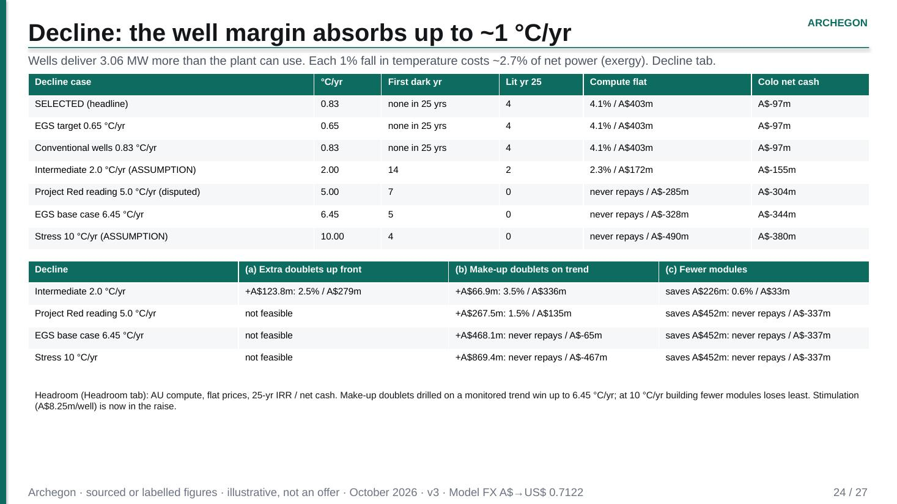
Slide text
- Wells deliver 3.06 MW more than the plant can use. Each 1% fall in temperature costs ~2.7% of net power (exergy). Decline tab.
- 24 / 27
- Decline case | °C/yr | First dark yr | Lit yr 25 | Compute flat | Colo net cash
- SELECTED (headline) | 0.83 | none in 25 yrs | 4 | 4.1% / A$403m | A$-97m
- EGS target 0.65 °C/yr | 0.65 | none in 25 yrs | 4 | 4.1% / A$403m | A$-97m
- Conventional wells 0.83 °C/yr | 0.83 | none in 25 yrs | 4 | 4.1% / A$403m | A$-97m
- Intermediate 2.0 °C/yr (ASSUMPTION) | 2.00 | 14 | 2 | 2.3% / A$172m | A$-155m
- Project Red reading 5.0 °C/yr (disputed) | 5.00 | 7 | 0 | never repays / A$-285m | A$-304m
- EGS base case 6.45 °C/yr | 6.45 | 5 | 0 | never repays / A$-328m | A$-344m
- Stress 10 °C/yr (ASSUMPTION) | 10.00 | 4 | 0 | never repays / A$-490m | A$-380m
- Decline | (a) Extra doublets up front | (b) Make-up doublets on trend | (c) Fewer modules
- Intermediate 2.0 °C/yr | +A$123.8m: 2.5% / A$279m | +A$66.9m: 3.5% / A$336m | saves A$226m: 0.6% / A$33m
- Project Red reading 5.0 °C/yr | not feasible | +A$267.5m: 1.5% / A$135m | saves A$452m: never repays / A$-337m
- EGS base case 6.45 °C/yr | not feasible | +A$468.1m: never repays / A$-65m | saves A$452m: never repays / A$-337m
- Stress 10 °C/yr | not feasible | +A$869.4m: never repays / A$-467m | saves A$452m: never repays / A$-337m
- Headroom (Headroom tab): AU compute, flat prices, 25-yr IRR / net cash. Make-up doublets drilled on a monitored trend win up to 6.45 °C/yr; at 10 °C/yr building fewer modules loses least. Stimulation (A$8.25m/well) is now in the raise.
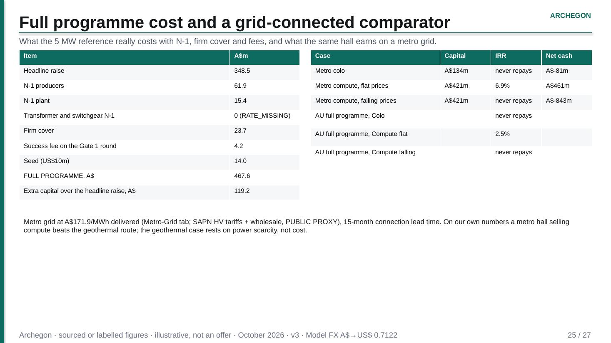
Slide text
- What the 5 MW reference really costs with N-1, firm cover and fees, and what the same hall earns on a metro grid.
- 25 / 27
- Item | A$m
- Headline raise | 348.5
- N-1 producers | 61.9
- N-1 plant | 15.4
- Transformer and switchgear N-1 | 0 (RATE_MISSING)
- Firm cover | 23.7
- Success fee on the Gate 1 round | 4.2
- Seed (US$10m) | 14.0
- FULL PROGRAMME, A$ | 467.6
- Extra capital over the headline raise, A$ | 119.2
- Case | Capital | IRR | Net cash
- Metro colo | A$134m | never repays | A$-81m
- Metro compute, flat prices | A$421m | 6.9% | A$461m
- Metro compute, falling prices | A$421m | never repays | A$-843m
- AU full programme, Colo | | never repays |
- AU full programme, Compute flat | | 2.5% |
- AU full programme, Compute falling | | never repays |
- Metro grid at A$171.9/MWh delivered (Metro-Grid tab; SAPN HV tariffs + wholesale, PUBLIC PROXY), 15-month connection lead time. On our own numbers a metro hall selling compute beats the geothermal route; the geothermal case rests on power scarcity, not cost.
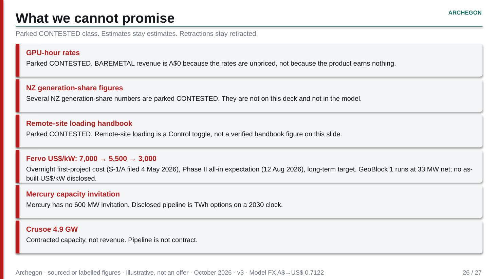
Slide text
- Parked CONTESTED class. Estimates stay estimates. Retractions stay retracted.
- GPU-hour rates
- Parked CONTESTED. BAREMETAL revenue is A$0 because the rates are unpriced, not because the product earns nothing.
- NZ generation-share figures
- Several NZ generation-share numbers are parked CONTESTED. They are not on this deck and not in the model.
- Remote-site loading handbook
- Parked CONTESTED. Remote-site loading is a Control toggle, not a verified handbook figure on this slide.
- Fervo US$/kW: 7,000 → 5,500 → 3,000
- Overnight first-project cost (S-1/A filed 4 May 2026), Phase II all-in expectation (12 Aug 2026), long-term target. GeoBlock 1 runs at 33 MW net; no as-built US$/kW disclosed.
- Mercury capacity invitation
- Mercury has no 600 MW invitation. Disclosed pipeline is TWh options on a 2030 clock.
- Crusoe 4.9 GW
- Contracted capacity, not revenue. Pipeline is not contract.
- 26 / 27
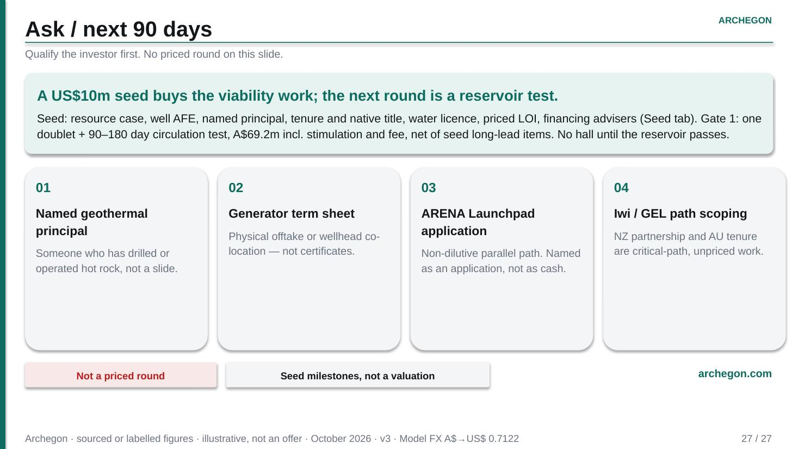
Slide text
- Qualify the investor first. No priced round on this slide.
- A US$10m seed buys the viability work; the next round is a reservoir test. Seed: resource case, well AFE, named principal, tenure and native title, water licence, priced LOI, financing advisers (Seed tab). Gate 1: one doublet + 90–180 day circulation test, A$69.2m incl. stimulation and fee, net of seed long-lead items. No hall until the reservoir passes.
- 01
- Named geothermal principal Someone who has drilled or operated hot rock, not a slide.
- 02
- Generator term sheet Physical offtake or wellhead co-location — not certificates.
- 03
- ARENA Launchpad application Non-dilutive parallel path. Named as an application, not as cash.
- 04
- Iwi / GEL path scoping NZ partnership and AU tenure are critical-path, unpriced work.
- Not a priced round
- Seed milestones, not a valuation
- archegon.com
- 27 / 27
Illustrative only. Figures are drawn from public benchmarks and from Archegon's concept model, labelled by status (VERIFIED, ESTIMATE, DERIVED, ASSUMPTION, RATE_MISSING). Unpriced items ship at A$0, so every capital figure is a floor. Nothing on this site is an offer of securities, a solicitation or financial advice.